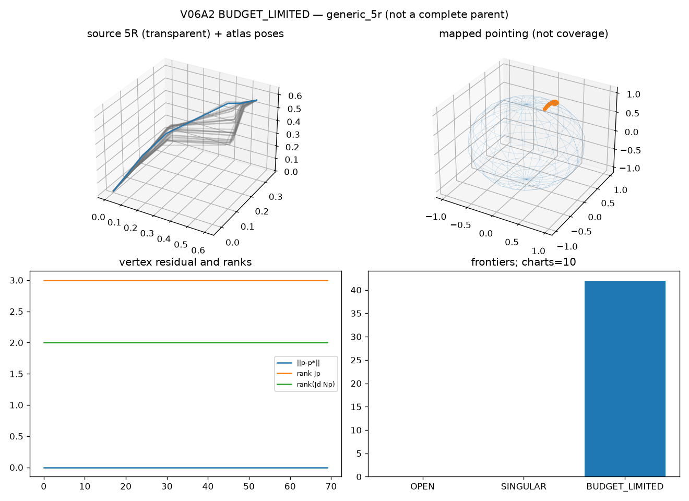

BUDGET_LIMITED is not a complete parent,
not S^2 coverage, and not a DecompositionCertificate.
Discovery UNRESOLVED_COMPONENT_DISCOVERY. Fibers are empty.
Joint limits are not_modeled.| charts | 10 |
|---|---|
| overlaps | 24 |
| frontiers | 42 |
| component_ids | generic_5r_component_seed0 |
| discovery bank / confirm | 32 / 64 |
| projected / unattached | 79 / 77 |
| max position residual (m) | 9.656e-11 |
| seed FD Jp error | 1.627e-10 (verified=True) |
| fibers | 0 |

Reproduce:
PYTHONPATH=src python -m grashof_workspace.spatial_experiments.v06a2 --outdir results/kinematic_decomposition/v06a2